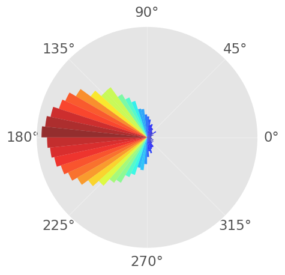
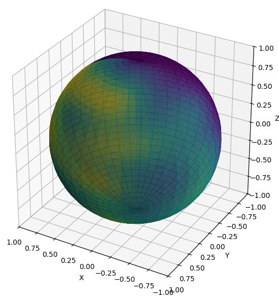

## フォン=ミーゼス分布が解き明かす図形の特徴 #### 〜データサイエンスの幾何学への応用〜 <div class="container"> <div class="col-left"> </div> <div class="col-right"> </div> </div> --- ### 自己紹介 <div class="profile-container"> <div class="profile-left"> * さめ(meg-ssk) * 🧑💻 フリーランスのソフトウェアエンジニア * 得意分野: * 📸 コンピュータビジョン (画像認識/点群処理) * 🌍 空間情報処理 (地理情報/リモートセンシング) * ☁️ クラウドインフラ設計/IaC (AWS, GCP) * [GitHub](https://github.com/s-sasaki-earthsea-wizard) * [YouTube](https://www.youtube.com/@SyotaSasaki-EW) * [Speaker Deck](https://speakerdeck.com/syotasasaki593876) </div> <div class="profile-right"> <img src="assets/images/avatar.png" alt="avatar" height="350px" width="350px"> </div> </div> --- ### ハイライト <div class="simple-box"> * フォン=ミーゼス分布は「方向の分布」を表す分布関数である * 重要な応用例を数多く持つ * 大きさだけではなく方向を持つ量(ベクトル)の分析 * 風向や図形の法線分布など * **今日は基礎的なコンセプトとオープンデータを使った分析例を示します！** * 方向統計学$(\mathrm{Directional\ Statistics})$の基礎を紹介します </div> --- ### 簡単な例 <img src="assets/images/arrows-distribution.svg" height="300px"> <div class="highlight-box"> * 平均すれば右を向いているが、ひとつひとつのサンプルの向きは揺らぐ * 方向の分布を表す分布関数とそれを特徴付けるパラメータは？ </div> --- ### フォン=ミーゼス分布 $$ f(\theta) = \frac{\exp(\kappa \cos(\theta - \mu))}{2\pi I_0(\kappa)} $$ <div class="highlight-box"> * 言うなれば$2$次元のベクトルの向きの正規分布 * $\mu$: 平均 * $\kappa$: 集中度 * $I_0(.)$: 第1種ベッセル関数 </div> --- ### フォン=ミーゼス分布の可視化  <div class="highlight-box"> * $\mu=180^\circ$, $\kappa =1.5$ の例を極座標ヒストグラムで表現 </div> --- ### 実用例: 風向の分布解析 <div class="simple-box"> * 日本海側は冬に北西から季節風が吹く * [気象庁が公開している青森県鯵ヶ沢町の風向分布のデータ](https://www.data.jma.go.jp/stats/etrn/index.php)を利用して検証 </div> <img src="assets/images/Ajigasawa.png" height="400px"> --- ### $2024$年$6$月と$12$月の風向分布 <div class="container"> <div class="col-left"> $6$月の日別最頻風向分布 </div> <div class="col-right"> $12$月の日別最頻風向分布 </div> </div> <div class="highlight-box"> * 西方向から風が吹く頻度が$12$月の方が高い * 本来ならより詳細な検討が必要だが割愛 </div> --- ### 風向のパラメタライズ <div class="simple-box"> * 風向がフォン=ミーゼス分布に従うと仮定し、$6$月と$12$月の風向の平均と集中度を推定 </div> <br> <div class="container"> <div class="col-box-left"> * $6$月 * 平均: $\mu \simeq 242^\circ$ * 集中度: $\kappa \simeq 0.46$ </div> <div class="col-box-right"> * $12$月 * 平均: $\mu \simeq 170^\circ$ * 集中度: $\kappa \simeq 2.40$ </div> </div> <br> <div class="highlight-box"> * $6$月は集中度が低く各方向に分散 * $12$月は集中度が高く、西方向からの風の頻度が高い </div> --- ### 図形の法線方向の分布 <div class="simple-box"> * 円と正方形の法線の分布を比較 </div> <div class="container"> <div class="col-left"> </div> <div class="col-right"> </div> </div> --- ### 円と正方形の法線分布の比較 <div class="container"> <div class="col-left"> </div> <div class="col-right"> </div> </div> <div class="highlight-box"> * 円の法線分布は一様、集中度$\kappa$は$0$ * 正方形の法線は$4$つピークを持つ。平均$\mu$は$0$度 * **法線分布から図形の情報を抽出できる！** </div> --- ### $3$次元への拡張: フォン$=$ミーゼス-フィッシャー分布 <div class="simple-box"> * フォン=ミーゼス分布は$2$次元平面での議論 * **フォン=ミーゼス-フィッシャー分布**は一般の$d$次元に拡張可能 * ただし今日は$3$次元のみにフォーカス </div> $$ f_3(\mathbf{x}) = \frac{\sqrt{\kappa}}{(2\pi)^{3/2} I_{1/2}(\kappa)} \exp (\kappa \langle \bm{\mu}, \mathbf{x} \rangle) $$ 平均$\bm{\mu}$がベクトルになることに注意 --- ### $3$次元のフォン$=$ミーゼス-フィッシャー分布の可視化 <div class="simple-box"> * 放線密度を球上のヒートマップで可視化 </div> --- ### 実用例: 点群データの法線分布 <div class="simple-box"> * スタンフォードバニーの法線分布 * どの方向にも分布する比較的均一な分布 </div> <div class="container"> <div class="col-left"> - 有名なウサギの$3\mathrm{D}$モデル </div> <div class="col-right">  </div> </div> --- ### どのような$3\mathrm{D}$モデルが特徴的な法線分布を持つか？ <div class="simple-box"> * 直方体に近い$3\mathrm{D}$モデルは$6$箇所にピークを持つ * 室内やビル群など * 草原は上向きの法線(地表面)を多く持つが、方向の集中度は低い * 表面は荒いので法線の方向はあまり集中しない * 横向きの法線は少ない * 球体はどの方向も均一に分布 * バニーはほとんど球体 (「まず牛を球とします」は大体本当) </div> --- ### さらなる応用例 <div class="simple-box"> * フォン=ミーゼス-フィッシャー分布は本質的には$R^d$空間のベクトルの分布を表す分布関数 * データサイエンスや機械学習モデルの開発では様々なベクトル化されたデータを扱う * **フォン=ミーゼス-フィッシャー分布の平均方向と集中度を推定することで、ベクトル化されたデータの特徴を単純化して捉えることができる** * 角度の分布は位相の分布としても解釈可能 → 音声処理や信号処理の分野でも応用可能 * 異常検知などに応用可能（……らしいです） </div> --- ### まとめ <div class="simple-box"> * フォン$=$ミーゼス-フィッシャー分布はベクトルの分布を表す分布関数である * 平均方向と集中度の$2$つのパラメーターでベクトルの分布を特徴づけられる * 今日は図形の特徴を定量化するための手法としての応用例を紹介した * 幾何学的な応用に限らず、ベクトルの集合を分析する有力な手法である </div> --- ### 補足 <div class="simple-box"> * 法線分布は図形の特徴を表現する方法のひとつ * ガウス曲率などの幾何学的量も図形の特徴を表現するのに役立つ （$3$次元の場合） * 複数の定量化手法を組み合わせることで、より豊かに図形の特徴を捉えることができる </div>